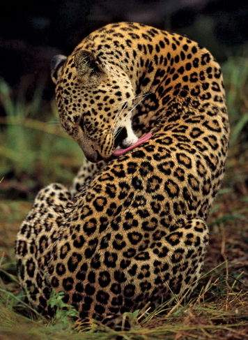
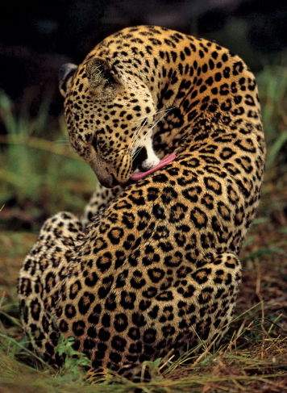

Sri Lanka has a significant population of Asian elephants, and several national parks, such as Udawalawe and Minneriya, are famous for elephant gatherings. The Pinnawala Elephant Orphanage is also a popular destination for elephant enthusiasts
The elusive Sri Lankan leopard is a subspecies of the leopard and can be found in Yala National Park, Wilpattu National Park, and Horton Plains National Park.
Sri Lanka is a birdwatcher's paradise with over 430 bird species. Notable birdwatching sites include Sinharaja Forest Reserve, Bundala National Park, and Kumana National Park. The Sri Lankan junglefowl, the national bird, is endemic to the island.